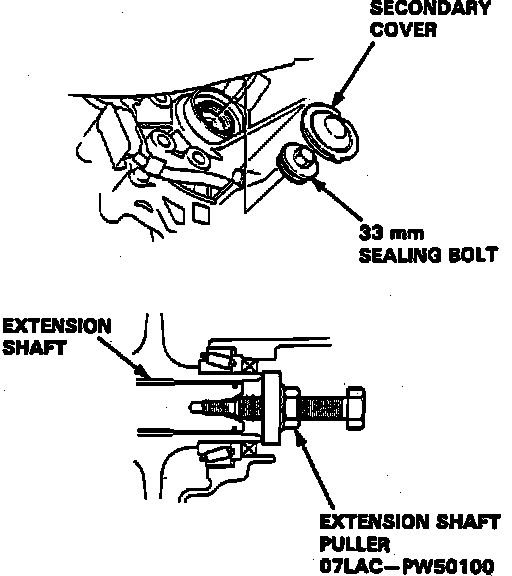

Transaxle Replace
1. Disable coded theft protection system as described in Accessories and Optional Equipment / Antitheft and Alarm Systems / Service and Repair.2. Disable airbag system as described in Air Bags and Seat Belts / Air Bags (Supplemental Restraint Systems) / Airbag System Disarming.
3. Disconnect battery ground and positive cables, then remove battery and battery box.
4. Remove underhood ABS fuse/relay box.
5. Remove sub ground cable.
6. Remove heat shield.
7. Remove distributor.
8. Disconnect then remove the control box. Do not disconnect vacuum hoses from control box.
9. Raise and support vehicle.
10. Remove torque converter cover.
11. Remove then plug driveplate bolts.
12. Disconnect transaxle sub harness connector and ground cable.
13. Remove transaxle housing mounting bolts and the 26mm shim.
14. Remove transaxle under guard.
15. Drain transaxle into a suitable container, reinstall drain plug using new gasket.
16. Support transaxle, remove transaxle mount and bracket.
17. Remove ATF cooler hoses and turn up to prevent fluid from leaking out.
18. Shift selector lever into park position.
19. Remove secondary cover and 33mm sealing bolt.
Fig. 10 Removing Extension Shaft:

20. Remove extension shaft from differential using extension shaft puller tool No. 07LAC-PW50100 or equivalent, Fig. 10.
21. Remove exhaust pipe and exhaust manifold stay.
22. Remove shift cable cover, then the control lever.
23. Remove shift cable holder from side of housing.
24. Disconnect shift position sensor connector and the harness.
25. Remove transaxle mid mount nuts.
26. With a suitable jack under transaxle, raise transaxle enough to release weight off mounts, then remove mid mounts and mid mount spacer.
27. Remove transaxle housing mounting bolts.
28. Remove torque converter cover mounting bolt on torque converter housing side. Do not remove torque converter cover mounting bolts on the differential carrier side, or the torque converter cover.
29. Pull transaxle away from engine until it clears dowel pins, then lower it out of the vehicle.
30. Reverse procedure to install.
31. Restore coded theft protection system and rearm airbag.